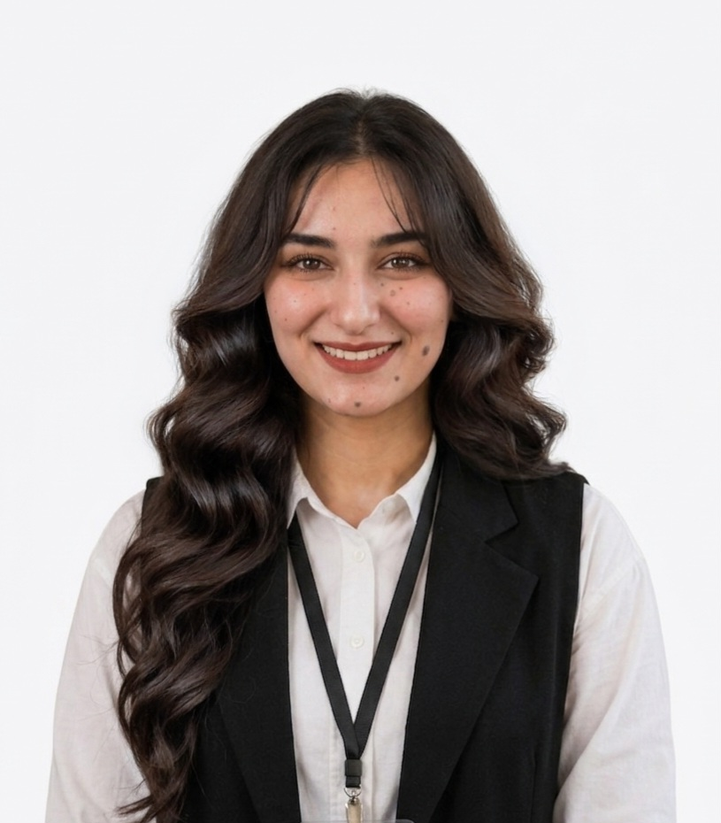

⚖
الشؤون السياسية والبرلمانية
اهتمامات بالتشريعات والسياسات العامة والثقافة السياسية والمشاركة المدنية الواعية.
خريجة هندسة الحاسوب بتخصص أمن وحماية الشبكات، تجمع اهتماماتها بين القيادة الشبابية والشؤون السياسية والبرلمانية والكتابة الإبداعية.

القيادة ليست موقعًا فحسب؛ بل مسؤولية ونزاهة فكرية ومساهمة ذات أثر.
رؤية شخصيةأنا ملاك تيسير العساسفة، خريجة هندسة الحاسوب بتخصص أمن وحماية الشبكات من جامعة مؤتة. تجمع اهتماماتي بين التفكير التقني والقيادة الشبابية والشأن العام.
أؤمن بأن المعرفة لا تكتمل إلا حين تتحول إلى مشاركة مسؤولة، وأن التقنية والسياسة والمجتمع مساحات متقاطعة لصناعة حلول أكثر وعيًا وإنصافًا.
ربط المشاركة العامة والقيادة التشاركية بالخلفية التقنية.
اهتمامات بالتشريعات والسياسات العامة والثقافة السياسية والمشاركة المدنية الواعية.
خبرة في القيادة الطلابية والعلاقات العامة وتنظيم الأنشطة ودعم المبادرات الشبابية.
خلفية أكاديمية في أمن وحماية الشبكات، ومشروع تخرج في التحقيق الجنائي الرقمي.
محطات أكاديمية وقيادية وتطويرية مختارة.
المشاركة في الدورة السابعة من برنامج الزمالة البرلمانية.
عضوية في مبادرة «جيل التحديث».
خبرة قيادية ضمن فرع طلابي هندسي، إلى جانب الأنشطة الطلابية والعلاقات العامة.
تخصص أكاديمي في أمن وحماية الشبكات.
استكشف مشروع تخرجي «Digital Miner» فكرة منصة للتحقيق الجنائي الرقمي، مع التركيز على تحليل الأدلة واستعادة الملفات المحذوفة.
Autopsy · FTK · PhotoRec · Sleuth Kit
Python · FastAPI · MongoDB
Cisco Packet Tracer · Wireshark · Cisco networking fundamentals
أضيفي رابط المشروع أو مستودعه فقط بعد التأكد من أنه متاح للعامة وجاهز للمشاركة.
إلى جانب اهتمامي بالشأن العام والتقنية، أجد في الكتابة الإبداعية والتدوين مساحة للتأمل، واستكشاف الأفكار، ومشاركة النصوص التي تنطلق من التجربة الإنسانية والأسئلة التي تستحق أن تُطرح.
مدونتي على منصة مُلهِم، حيث أشارك كتاباتي ونصوصي.
مدونتي الشخصية على Blogger.
للتواصل المهني، يمكن زيارة حسابي على LinkedIn.